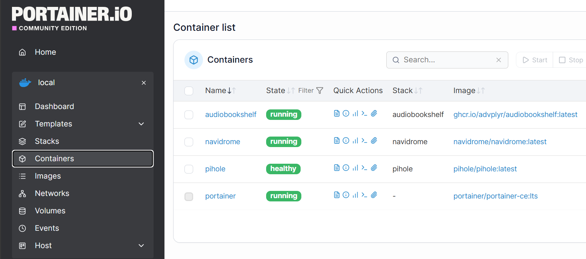

02 / SERVICES
The applications
I’m running.
I installed four Docker applications in VM 200 for DNS filtering, container management, audiobooks, podcasts, and music. Tailscale runs directly on Ubuntu alongside Docker. Open a card for the setup details and what I’m still working on.
01 / DNSPi-hole
I use Pi-hole to filter DNS queries on my Dell and learn how to check which DNS service the computer is using.View implementationReturn to overview
How I implemented it
I published DNS port 53 over both TCP and UDP and configured upstream resolvers. Tailscale DNS points my Dell to Pi-hole.
What matters in this lab
The gateway did not allow the network-wide DNS setup I wanted. I verified ordinary resolution and a blocked advertising domain with nslookup and Resolve-DnsName.
DNS resolution and blocking tested on my Dell
Related build notes ↗02 / REMOTE NETWORKINGTailscale
I use my personal Tailscale network to reach the lab from my Dell and iPhone. Two host routes provide access to the lab, and an optional exit node lets me use my home internet connection remotely.View implementationReturn to overview
How I implemented it
I installed Tailscale directly on VM 200, outside Docker. I approved 10.0.0.245/32 and 10.0.0.250/32 instead of advertising the full home subnet.
What matters in this lab
I configured persistent IPv4/IPv6 forwarding and tested that a remote device could use my home internet connection through the exit node. I kept this personal setup separate from my school environment.
Remote lab access and exit node tested
Related build notes ↗03 / CONTAINER MANAGEMENTPortainer
I use Portainer’s interface to inspect and manage my Docker applications.View implementationReturn to overview
How I implemented it
I installed Portainer alongside Pi-hole and checked that I could access them before adding the media applications.
What matters in this lab
The screenshot below shows Pi-hole, Portainer, Audiobookshelf, and Navidrome. Its status labels are from when I took it; this website does not monitor the containers.
Four application containers recorded
Related build notes ↗04 / AUDIOBOOKS & PODCASTSAudiobookshelf
I deployed a service for my audiobook and podcast collection. Adding and organizing the library is still in progress.View implementationReturn to overview
How I implemented it
I added Audiobookshelf after Portainer and Pi-hole. I keep track of its settings and application data separately from the audiobook and podcast files.
What matters in this lab
The container appears in Portainer. I am still adding and organizing audiobooks and podcasts.
Deployed · library in progress
Related build notes ↗06 / APPLICATION PLATFORMDocker + Compose
I installed Docker Engine to run the containers and used Compose files to define the services and their storage.View implementationReturn to overview
How I implemented it
I installed Docker Engine and Compose on Ubuntu Server 24.04. I configured volumes and bind mounts for application data, tested Portainer and Pi-hole, then added the media services.
What matters in this lab
Application settings, media files, and backup copies all need attention. My Proxmox backups are on the same laptop, so they do not protect against losing that machine or its storage. A documented restore test is still planned.
Runtime and four applications deployed
Related build notes ↗DEPLOYMENT EVIDENCE
The actual container list
All four applications appear in this Portainer capture. Tailscale is absent because I installed it natively on Ubuntu.

Enlarge evidenceThe state labels belong to this screenshot. This portfolio does not query Portainer or connect to the running lab.
Recorded screenshot · values are from the time of capture